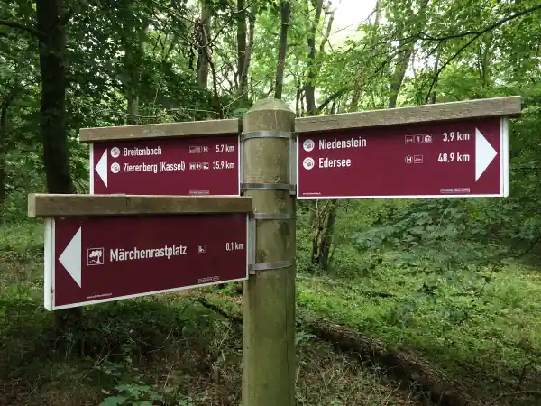

Start / Frühling
Aaron Schiele
geprüft am
geprüft am
Was ist an Ostern 2027 in Kassel offen?
Ostern liegt 2027 früh, Karfreitag ist der 26. März, Ostermontag der 29. März. Der Herkules ist dann noch in der Winterpause, er öffnet erst am 1. April. Offen sind:
- Bergpark Wilhelmshöhe: das ganze Jahr frei zugänglich. Ohne Busse und Wasserspiel-Trubel ist ein Ostersonntag am Hang einer der ruhigsten Tage des Jahres.
- Schloss Wilhelmshöhe: dienstags bis sonntags und an Feiertagen von 10 bis 17 Uhr, also auch über Ostern.
- Großes Gewächshaus: bis zum 31. März mit Palmen, Kamelien und Orchideen, dienstags bis sonntags von 10 bis 17 Uhr. An Ostern 2027 ist es noch geöffnet, danach geht es in die Sommerpause.
- Löwenburg: bis Ende März freitags bis sonntags und an Feiertagen von 10 bis 16 Uhr, nur mit Führung.
Schloss, Löwenburg und Gewächshaus sind im Tagesticket Wilhelmshöhe enthalten: 8 Euro, ermäßigt 5 Euro, unter 18 Jahren frei.
Was öffnet im April?
Am 1. April beginnt die Sommersaison an mehreren Orten gleichzeitig. Der Herkules hat dann dienstags bis sonntags von 10 bis 17 Uhr offen, die Plattform am Oktogon gehört wieder ins Tagesticket. Das Besucherzentrum daneben ist ohnehin das ganze Jahr geöffnet. Die Löwenburg hat ab April dienstags bis sonntags von 10 bis 17 Uhr geöffnet.
In der Karlsaue öffnen am 1. April die Insel Siebenbergen und das Marmorbad. Siebenbergen ist ein Garten auf einer Insel am Südende der Aue, von April bis September täglich von 10 bis 18 Uhr geöffnet, Eintritt 8 Euro, bis 18 Jahre frei. Ab Mai blühen dort die Rhododendren. Mehr zur Aue steht unter Orangerie und Karlsaue.
Wann beginnen die Wasserspiele 2027?
Am Samstag, 1. Mai 2027, mit dem Feiertag als erstem Wasserspieltag. Bis zum 3. Oktober fließt das Wasser jeden Mittwoch, Sonntag und an allen hessischen Feiertagen, los geht es um 14.30 Uhr am Herkules. Ablauf, Route und die besten Plätze stehen unter Wasserspiele Kassel.
Zwei Wochen später, am Freitag, 14. Mai, und Samstag, 15. Mai 2027, sind die Beleuchteten Wasserspiele, mit Rahmenprogramm. Die Uhrzeiten stehen noch nicht fest. Alle Termine des Jahres findest du unter Termine in Kassel 2027.
Was lohnt sich im Frühling sonst?
Wenn die Tage länger werden, beginnt die Wanderzeit im Habichtswald direkt hinter dem Bergpark, siehe Wandern im Habichtswald. An einem kühlen Apriltag passt danach die Kurhessen-Therme in Bad Wilhelmshöhe, sie hat täglich von 9 bis 22 Uhr geöffnet. Und wenn es regnet, helfen die Ideen unter Kassel bei Regen.
Häufige Fragen
Wann ist Ostern 2027?
Ostersonntag ist der 28. März 2027, Karfreitag der 26. März und Ostermontag der 29. März.
Hat der Herkules an Ostern 2027 geöffnet?
Nein. Ostern 2027 liegt vor dem Saisonstart, Oktogon und Aussichtsplattform öffnen am 1. April. Das Besucherzentrum am Herkules ist dagegen auch an Ostern dienstags bis sonntags und feiertags von 10 bis 17 Uhr offen. Der Bergpark selbst ist frei zugänglich, Schloss Wilhelmshöhe und Gewächshaus sind geöffnet.
Gibt es an Ostern Wasserspiele in Kassel?
Nein. Die Wasserspiele 2027 beginnen am 1. Mai und laufen bis zum 3. Oktober.
Wann blüht es in Kassel?
Auf der Insel Siebenbergen in der Karlsaue blühen ab Mai die Rhododendren. Die Insel öffnet am 1. April.
Quellen abgerufen am 17.11.2026
- Stadt Kassel Wasserspiele und Beleuchtete Wasserspiele · Orangerie und Karlsaue
- Hessen Kassel Heritage Herkules · Besucherzentrum Herkules · Schloss Wilhelmshöhe · Großes Gewächshaus · Löwenburg · Insel Siebenbergen
- Kurhessen-Therme Preise und Öffnungszeiten
Weiterlesen
Wasserspiele Kassel
Wasserspiele Kassel im Bergpark Wilhelmshöhe: wann sie laufen, Ablauf mit Uhrzeiten, Route vom Herkules zur Fontäne, Eintritt frei, Anreise.
Weiterlesen
Habichtswaldsteig
Wandern im Habichtswald ab dem Bergpark Wilhelmshöhe: vier Rundtouren von 2 bis 18 Kilometern mit Start, Markierung und Rückweg per Bus 22 und Tram 4.
WeiterlesenBergpark Wilhelmshöhe Kassel
Bergpark Wilhelmshöhe in Kassel: was dich im UNESCO-Welterbe erwartet, Eintritt (Park frei), ein Rundweg bergab für einen Tag und die Anreise.
Weiterlesen